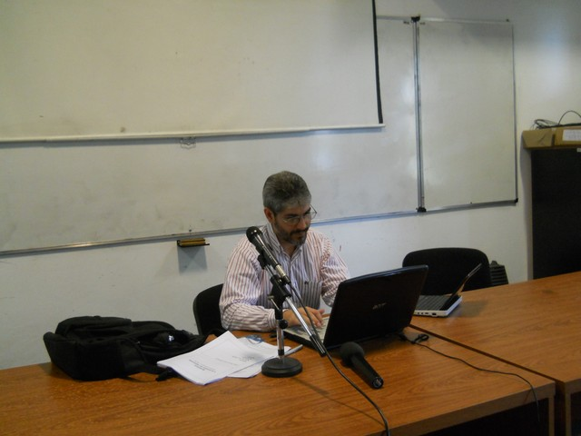

Video de la charla sobre Sysadmins de cballard en act_as_rubylit 2010
La semana pasada me enteré que viernes y sábado era act_as_rubylit 2010, la segunda edición de un evento sobre Ruby organizado por amigos aca en Santa Fe. Conozco muy poco de Ruby, por lo que varias de las charlas del programa no me iba a servir realmente, pero una me llamó la atención: "Sysadmin: a la sombra del desarrollo", por César Ballardini.
César es un gurú local, nos inició en GNU/Linux a la mayoría de los sub 30 que conozco de la comunidad santafesina y es un gran tipo. Me hice un hueco entre el trabajo y un curso de maestría para llegar. 3:50 estaba manejando hasta la FICH, lugar dónde se realizaba el evento. Encontré el Aula Magna a eso de las 4:05 cuando la charla recién empezaba.
{kind=link}
Algo que realmente envidio de las universidades de otros países es que todas las lectures se graban en video. Aca no. No tenemos la infraestructura y organizarse para hacerlo siempre es un inconveniente. Antes de salir había leído en la lista de Ruby Litoral que iban a filmar las charlas, pero más adelante en el mismo hilo el camarógrafo se arepentía.
Llegué con la secreta intensión de filmar la charla con mi celular. La verdad, se la banca. Tiene muy buena calidad y memoria para almacenar, pero falla la batería. Puedo grabar a lo sumo una charla antes de que se termine. Tengo que pensar en algún esquema en el que tenga el celu enchufado a la vez que filmo; y por supuesto, comprarme urgente un brazo robótico (ok, un porta GPS para el auto) que pueda poner a sostener la cámara al grabar. El brazo humano se me acalambró :)
Sin más preámbulos, les dejo la filmación y las slides que me envió César.
acts_as_rubylit 2010 - Sysadmin: a la sombra del desarrollo - César Ballardini from Orfx Sch on Vimeo.
Gracias Orfi por encargarte de editarlo y subirlo.
Comentarios
Comments powered by Disqus